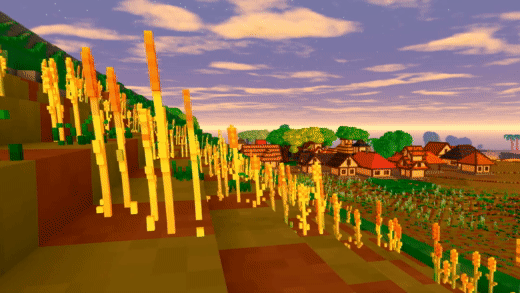
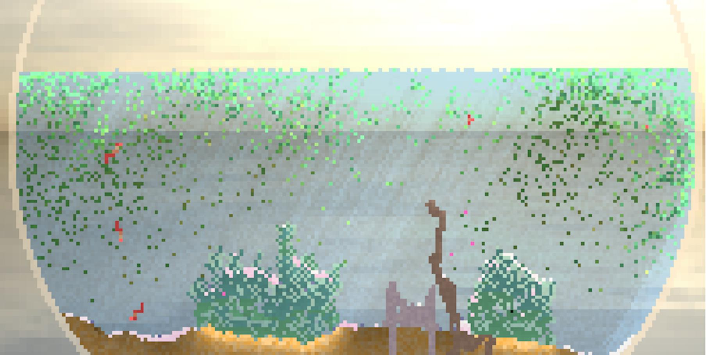
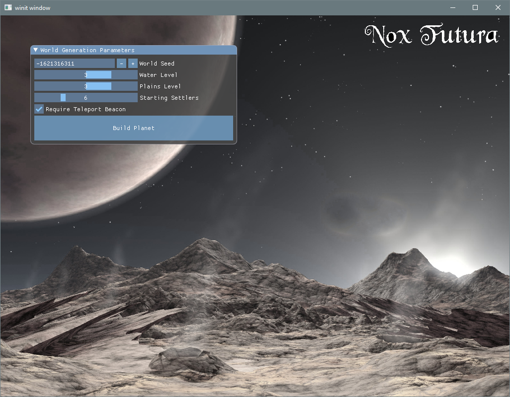
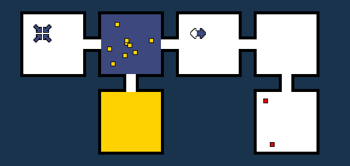
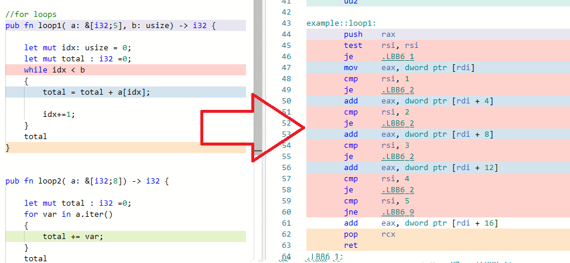
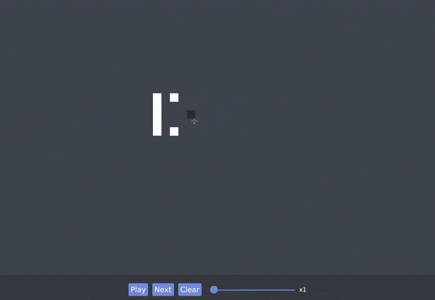
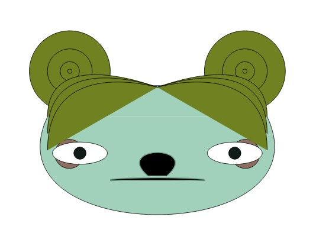
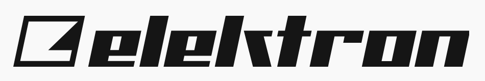

This Month in Rust GameDev #10 - May 2020
Welcome to the tenth issue of the Rust GameDev Workgroup’s monthly newsletter. Rust is a systems language pursuing the trifecta: safety, concurrency, and speed. These goals are well-aligned with game development. We hope to build an inviting ecosystem for anyone wishing to use Rust in their development process! Want to get involved? Join the Rust GameDev working group!
You can follow the newsletter creation process by watching the coordination issues. Want something mentioned in the next newsletter? Send us a pull request. Feel free to send PRs about your own projects!
Table of contents:
- Game Updates
- Learning Material Updates
- Library & Tooling Updates
- Popular Workgroup Issues in Github
- Meeting Minutes
- Requests for Contribution
- Jobs
- Bonus
Game Updates
Veloren
 The new repo banner
The new repo banner
Veloren is an open world, open-source voxel RPG inspired by Dwarf Fortress and Cube World.
In May, Veloren 0.6 was launched! Check out the launch trailer below for an overview of the changes. The launch party was a massive success with nearly 50 people online at the peak. In May, character persistence was added. This allows players to save their level after leaving the server. Dungeons were merged right before the release, and include bosses. Many small bugs were fixed for the release as well. Veloren also now has an Open Collective account, and you can donate towards our infrastructure costs. GamingOnLinux wrote an article on Veloren's development.
 0.6 release trailer. Click for the full video!
Here is the May changelog:
- Added server-side character saving
- Player now starts with a lantern.
- Added tab completion in chat for player names and chat commands
- Added server persistence for character stats
- Added a popup when setting your character's waypoint
- Added dungeon arenas
- Added dungeon bosses and rare boss loot
- Added 2 sets of armour. One Steel and one Leather.
- Added context-sensitive crosshair
A 0.7 intro meeting was held, in which the devs looked at what they wanted to achieve with this version. 0.7 will be released August 1st. They came up with a definition of 0.7, and what they wanted to achieve:
As a player, I want to get quests from NPCs in settlements. I want to be sent to kill enemies, collect objects, or complete dungeons. I want to be sent from village to village and become familiar with the region.
I want to be able to open the map and get information where I need to go for a quest. I want to be able to easily find where dungeons, villages, and other points of interest are. I want to be able to open a trade window with NPCs in villages, and buy and sell items. I want to be able to craft items with ingredients that I have.
I want to be able to see and hear more while in combat. I want to feel good while doing combat. I want to see particle effects from magic, and hear swords clashing together. I want to be able to add people to my combat party and interact with the game UI to do this.
Welcome to Veloren! From the 0.6 release party
You can read more about some specific topics from May:
May's full weekly devlogs: "This Week In Veloren...": #66, #67, #68, #69.
Paddlers
Paddlers is a multiplayer strategy game with a live prototype available online to demonstrate its current status. It is a learning-by-doing hobby project to explore the possibilities with Rust on the web, developed by a single person so far but open to contributors.
May was a busy month for Paddlers and brought many fundamental changes and new features, including the ability to observe other player's villages. A summary of changes is available on the Paddlers news page.
Besides programming, the developer of Paddlers also wrote a blog post called Benefits of full-stack Rust where the details some of his experiences when implementing a server-client model using Rust on both ends. Furthermore, he published a first video teaser.
Discussions: /r/rust
Sailing Simulator Prototype
This unnamed game is still in the prototype stage and it's the new project of Kunos Simulazioni (creators of the Assetto Corsa racing simulation franchise) co-founder and former Lead Programmer Stefano Casillo who started a new studio (Jaxx Vane Studio) in April 2020 in the search of new challenges.
It's going to be a modern Foiling/Sailing Simulator aiming to bring the depth, rigor and attention to detail found in racing simulations to the sailing genre on PC/Windows. The game features a fully custom scratch made 3D engine written in Rust with minimal dependencies using DirectX 11 via winapi-rs, ODE and OpenAL with custom bindings.
The project should leave the prototype stage later next month. The development is streamed live 3 times a week on Twitch with highlights also published on YouTube.
Garden: May Devlog
Garden is an upcoming game centered around growing realistic plants.
May devlog was posted. Some of the updates:
- The core logic of the plant simulation was rewritten, allowing for a broader variety of (more adaptable) plants, with a broader difference in tree growth behavior across different species.
- A WIP point-cloud drawing tool (currently named Kaleidoscope) for creating some parts of the game world.
- Optimizations: such as reducing the number of objects to be drawn by 90% (mostly via frustum culling).
- Anti-aliasing, new leaves, and textures.
Sandbox
Sandbox is a falling sand game by JMS55 that provides a variety of fun particle types to place, and then you get to watch the resulting interactions!
The main focus so far has been experimenting with different particle types, including:
- Sand
- Acid - Dissolves material.
- Water
- Replicator - Creates infinite copies of other particles.
- Plant - Grows over time once placed on wet Sand, or on top of an existing plant.
- Cyrotheum - A cold particle that melts over time, and releases a wave of cold to its surroundings.
- Unstable - Heats up over time, vaporizing a large radius at too high of a temperature, and releases Smoke.
- Electricity - Can only exist when falling, or in Water. Flows through Water. Very hot.
- Glass - Created by heating up Sand. Acts like a liquid at high enough temperatures, and a solid otherwise. Immune to Acid.
- Life - A semi-intelligent particle that stacks itself up, and moves as a group. Likes to breed upon eating Plants. Will jump down short drops. Dies if too hot or cold, or upon falling a large distance.
- Blood - Created by pressurizing dead Life particles, by stacking enough of other particles on top.
Got any ideas? Leave an issue on github, or add it yourself!
orb.farm

orb.farm is a virtual ecosystem where different species of creature can live, grow and die as part of a self-contained food chain. Made by Max Bittker (sandspiel's author).
Element types:
- Inert: Clear, Water, Glass, Sand, Stone, Wood
- Autotrophs
- Algae: Photosynthesizes sunlight & carbon dioxide to produce nutrients and oxygen. Life of the party!
- Grass: Grows into eel grass, which is a source of food and oxygen. Needs to pull nitrogen from sand in order to grow.
- Daphnia (herbivore): Also know as water fleas, these freshwater zooplankton are a key species in the ecosystem. They feed on algae, and lay eggs which can lay dormant for a long time! More active at night.
- Carnivores
- Fish: They feed mostly on daphnia but will also eat on the biofilm
that grows on plants. I can't tell what they're thinking.
- Goldfish: Loyal but simple minded. Breathes oxygen
- Decomposers
- Bacteria: Aerobically breaks down waste into nitrogen. Decomposers are very important parts to a functioning ecosystem. Blows bubbles when happy.
- Fish: They feed mostly on daphnia but will also eat on the biofilm
that grows on plants. I can't tell what they're thinking.
The source code is available here.
Discussions: /r/rust
For The Quest
For The Quest is the working title for a game in early development by @seratonik. Written entirely in Rust and compiled to WebAssembly, For The Quest is destined to become a MMORPG set in a post-apocalyptic Earth where your goal is to band together into like-minded factions to not only survive in this new world, but to unearth the cause of humanity's downfall.
For The Quest is currently undergoing engine development with a focus on running smoothly in modern browsers using WebGL 2.0 before moving onto native desktop ports.
New developments in May:
- All game assets are now defined server-side in a database and are streamed to the client on demand as areas are requested
- New desert / sand assets added to test the new asset loading system
- Translucent water surfaces with primitive refraction effect added
- New "picking" system implemented that is aware of the 3D coordinates at location of selection in addition to being aware of which object selected
- A basic world editing UI has been built in React / Javascript and interfaced to the game engine via WASM bindings, features include: displaying info about currently selected object, deleting objects, adding any object type, creating new maps and teleporting to any existing map
- Map changes are persisted on the server and location of player is now restored when closing the client and coming back later
Follow @seratonik on Twitter for updates.
Crate Before Attack
Decision tree and goal distance map in the background
Crate Before Attack by koalefant (@CrateAttack) is a realtime/turn-based multiplayer game where frogs combat their friends while navigating the landscape with their sticky tongues.
May development was focused on implementing AI of opponents and adding race mode:
- Video of AI racing against itself with visualized decision tree;
- Playable build (works in the browser on PC or Mac).
More details in the DevLog and YouTube channel.
Also, check out a fun physics demo of the game's physics engine.
Stellary

Stellary by Coffé Junk Studio is a fast-paced multiplayer artillery game that promises exciting battles and real-time gravity physics.
Your goal is to "defend" your planet by destroying the enemy’s planet. Be careful, though, your missiles don't always fly straight. Be sure to take into account the gravity of planets, the sun, and other celestial bodies! Try out different tactics, e.g. sling shooting missiles around the sun, spamming them, or lining up sniper shots!
The game is made using the studio's "Sphere Engine" that is being implemented using Rust and Vulkan.
Dig Escape

Dig Escape is a simple puzzle game written in Rust. You can play it in the browser here. The developer has released some videos about the development of the game. They also did a review on what it was like working with Rust for the first time. Be sure to check out the Github repo.
Akigi
Completed cat model with rigging
Akigi is a magical multiplayer online world where humans aren't the only intelligent animals. Akigi is a solo project, and the developer hopes to share their excitement and challenges through their dev blogs.
In May, progress was made on the game models. Test have been created in order to formalize what a testing suite should look like in Akigi. The interactive sequences system was restructured to allow for a node system that could guide the player better. A data extraction system was put in place to view metrics from the game server.
Some of this month's updates:
- Learning to Think
- Integration Testing
- Testing Quests
- Interactive Sequences
- Logging
- User Interface Iteration
- Inventory
Full devlogs: #065, #066, #067, #068, #069.
Nox Futura: Rust Edition
 Worldgen menu
Herbert Wolverson (the author of bracket-lib and the Rust Roguelike Tutorial) started experimenting with porting Nox Futura to Rust.
At the moment, a wgpu-rs backend, basic planet and region generation are ready. Check out Sharing Saturday devlogs for more detailed reports: #1, #2, #3.
On FPS Game Progress #1
Atil Kockar posted the first devlog about their experience of writing an FPS game using Rust, SDL, and OpenGL. At the moment, the game features loading .obj files, drawing simple UI, and Q3-style character controller logic.
Life

"Life" by @datoh is a WIP puzzle game written using Tetra. Though still a prototype, the game has a bunch of playable levels and a level editor. The development process is streamed at twitch.tv/datoh.
Mind's Eye
Mind's Eye by Michael Stott is a WIP experimental Sokoban-esque puzzle game developed using Rust and SDL2. The objective is to move the colored blocks into the line of sight of a matching eye.
vkeyes-demo-rs
vkeyes-demo-rs by Fun Maker is a simple OpenVR+Vulkano demo with a twist: you can rotate your eyes separately with analog sticks.
Also, the demo features asynchronous model/texture loading from .obj, .png, and OpenVR and uses a dedicated queue for data transfer if available.
Learning Material Updates
Rust Sokoban Tutorial
The Rust Sokoban tutorial is an online book aimed at Rust gamedev beginners which walks through making a simple Sokoban game using ECS, ggez and specs. It tries to teach the basics of architecting in ECS and basic Rust concepts through a hands-on approach.
This month:
- the project received 10+ contributions from beta testers
- work was started on chapter 3 which features advanced gameplay
You can follow along for updates and release progress here.
Adding WASM Support to a Native App

Porting an existing native application to run in the browser as a WASM application comes with many challenges, including adapting to the browser's control flow, threading model, and security restrictions.
This month Azriel presented the challenges of adding WASM support to the Amethyst game engine. The recording is on youtube and the presentation material is available online.
Disassembling Rust: Part 1

Rust comes with many new constructs and features not commonly found in other languages. Programmers coming from different backgrounds, notably C++ and game-dev might wonder how such a construct translate to machine code.
In the first part in a series, Marco Giordano (@MGDev91) investigates some common Rust construct to see what instructions they translate to, highlighting a few interesting findings in how Rust guarantees safety and ensures speed.
Pong tutorial with GGEZ
Mikail Khan shared a three-part tutorial about building a simple version of Pong using GGEZ:
I saw a post on reddit asking for a simple game dev tutorial with Rust. Generally people encourage using ECS with any Rust game, so I guess there’s no tutorials for anything without it. However, for simple games like Pong or Flappy Bird, it really is easier to forgo the ECS.
While Amethyst, the biggest Rust game engine, is completely built on ECS and you can’t make a game without it, there’s still plenty of small game engines that don’t make any assumptions. My favorite of these is ggez.
The source code for all stages could be found here.
gfx-hal & vulkan basics
Subroto Biswas started
a "gfx-hal & vulkan basics" tutorial series.
I have found that learning new things every often, leads to chaos, and people (specifically ME) tend to forget many things they have already learnt before. These notes will help me to keep reference notes for myself, as well as for anybody who is willing to learn Vulkan API using gfx-hal.
For now it includes two posts:
Library & Tooling Updates
safe_arch
safe_arch is a crate by @lokathor that safely exposes arch intrinsics via #[cfg()].
safe_arch lets you safely use CPU intrinsics - those things in the core::arch modules. It works purely via
#[cfg()]and compile time CPU feature declaration. If you want to check for a feature at runtime and then call an intrinsic or use a fallback path based on that then this crate is sadly not for you.SIMD register types are "newtype'd" so that better trait impls can be given to them, but the inner value is a pub field so feel to just grab it out if you need to. Trait impls of the newtypes include: Default (zeroed), From/Into of appropriate data types, and appropriate operator overloading.
See the docs for more details. Feedback and contributions are welcome.
Discussions: /r/rust
Point of WebGPU on Native
This month, @kvark shared their vision of why WebGPU on native platforms is important.
I can see WebGPU on native being a go-to choice for amateur developers, students, indie professionals, mobile game studios, and many other groups. It could be the default GPU API, if it can deliver on its promises of safety, performance, and portability. We have a lot of interest and early adopters, as well as big forces in motion to make this real.
Discussions: /r/rust, hackernews
NodeFX
Click the image to see the animated version
Project "NodeFX" by Christian Vallentin (@MrVallentin) is an unnamed node-based tool for creating GLSL shaders in real-time, entirely written in Rust.
Some highlighted features and plans are:
- The majority of nodes have real-time previews
- Extensive library of nodes, from math and logic to gradients, transitions, and animations
- Support is currently limited to exporting GLSL shaders, but more languages and formats are planned
- The tool will be released for free, as soon as it's ready
The project is currently closed source and early in development. More information can be found on Twitter.
Goods
Asset management library that aims to be easy to use, flexible, extensible and support virtually any use-case:
- Need to load compund asset that pulls subassets without boilerplate on
call-site? All heavy-lifting for loading subassets can be done in
Formatimplementation for the asset type. - Asset is made of GPU resources and access to graphics device is required to
create asset instance?
Asset::buildreceives reference toAsset::Context. - Targeting browser?
goodssupport building for wasm and even bundle Fetch API based asset data source. - Target doesn't have
std? Core types and traits areno_stdcompatible. Butallocis required. - Looking to keep things tidy and fast to build? Clean build of the crate with no features takes about ~3s on modern CPU.
- Integration with
serdeecosystem? SpecialFormatimplementations can load assets whose representation implementserde::de::DeserializeOwned. Crate includesFormats for loading assets from JSON, YAML and RON documents.
Crate's repo has few examples with nearly each line of the code explained.
cute-c2
cute-c2 is a Rust wrapper, created by yeahross0, for Randy Gaul's single-header C library of the same name. It implements 2D collision detection between circles, AABBs, capsules and up to eight-sided convex polygons.
The API exposed is safe and Rust-y, and various examples are provided in the repository. The library is not yet published to Crates.io, but looks promising!
KAS v0.4
KAS (toolKit Abstraction System) is a general purpose GUI toolkit, developed by dhardy.
This month, version 0.4 was released - some highlights from the changelog are:
- An overhaul of the
WidgetAPI - Support for pop-up widgets
- More robust input handling
- Limited support for stable versions of the Rust compiler
Discussions: /r/rust
Iced

Iced is experimental, cross-platform GUI crate focused on simplicity and type safety. Iced can be used natively, in a web browser, or can use wgpu,
This month, Iced got interactivity support for the Canvas widget. Also, check out a new "Game of Life" demo here.
beehive
yz +Y
__
yx / \ xz +X
-X zx \__/ xy
-Y zy
beehive by @toast_dev is a library that provides utilities and collections for working with 3D hexagonal maps. It's based on Red Blob Games's guide.
RustSim Survey
Hi! This survey has been created by sebcrozet from rustsim.org and nphysics.org.
With this survey, I would like to understand better what the community needs from a physics engine. This will help prioritize future developments in Rust. Most questions of this first part of the survey are mandatory and allow multiple answers which you can complete with custom answers.
Discussions: /r/rust
svg_face

svg_face is a crate for generating random SVG faces. It's a port of anokhee/visual-synthesizer to Rust.
This Month in Mun

Mun is a scripting language for gamedev focused on quick iteration times that is written in Rust.
After half a year of hard work by the Mun Community and Core Team, Mun v0.2.0 was released. With the addition of hot reloadable structs, this forms a big step forward in terms of hot reloadability for the language.
Their additional May updates include:
- number type inferencing;
- removing generic
float,int, anduinttypes; - updating the Mun book;
- an official VSCode plugin for Mun syntax highlighting;
- documentation fixes and improvements.
Tetra 0.3.6
Tetra is a simple 2D game framework, inspired by XNA and Raylib. This month, version 0.3.6 was released, featuring:
- A new suite of functions for querying information about the player's connected monitors
- Tweaks to the startup code, to ensure slow asset loading doesn't cause the window to hang
- Several under the hood bug fixes
Additionally, planning for 0.4 has begun, which will
bring some changes to the Font/Text API.
rg3d Engine
rg3d is a 3d game engine. It has gained a lot of new features:
- Volumetric lights - lights now have configurable amount of light scattering in volume which significantly improves light quality.
- Multi-camera rendering - can be used to make split-screen games, add picture-in-picture features and so on.
- Asynchronous resource loading
- Four new examples
- Screen-space ambient occlusion (SSAO)
- Directional lights for outdoor scenes, it still has no shadows yet.
- Documentation improvements - still far from completion, but covers some basic use cases.
- Serialization improvements.
- rg3d-ui crate improvements: added docking manager, menu, file browser, tree view.
- Editor - more about that below.
rusty editor

rusty editor is a scene editor for rg3d engine, the goal is to make robust and easy-to-use editor which is able to load, modify, and save scenes in native engine format. The editor is based on rg3d engine, user interface is based on rg3d-ui crate which developing in parallel with editor. It is still in very early development phase, but it already has some basic features:
- Undo/redo
- Saving and loading of scenes.
- Interaction modes (move, scale, rotate).
- Node properties editor
- World outliner (scene hierarchy editor).
- And many other small stuff.
Oxygengine

The main goal of this month changes was to fix most problematic bugs and finally add a feature to support custom fonts assets. While not all bugs could be fixed on time, here are two interesting things that shows at least the small amount of progress that was made:
-
Added support for loading and using custom TFF fonts assets:
-
Additionally @PsichiX has created a small example of a project that shows how to make a pokemon-like game basis - it covers topics such as: using Tiled Editor maps to render the world and applying player movement in it, as well as using spritesheet-based frame animations. Example sources can be found here: Oxygengine pokemon-like basic mechanics
If you want to be up to date with Oxygengine ecosystem progress, make sure to follow project on GitHub and see Oxygengine Project board.
Amethyst

-
rluais now part of the Amethyst organization.rluais a library that provides high level bindings between Rust and Lua. Through discussion, a number of people will be sharing maintenance of the library. -
legion-task: A multi-tasking library for the Legion ECS.This library by bonsairobo provides multi-tasking support on the Legion ECS, allowing tasks to be executed in dependency graph order. Check out the announcement post in the forum.
This is a port of the
specs-tasklibrary, which provides the same functionality for SPECS.
Robo Instructus: Font Rendering Saga
This month, the developer behind Robo Instructus spent lots of time working on font rendering. They were looking to expand translations to languages that had different characters, such as Cyrillic or Chinese. This would require support for cubic bezier curves, not just quadratic curves. You can read their blog for an in-depth explanation. This lead to the release of ab_glyph 0.1 that supports otf fonts, which then lead to glyph_brush 0.7 based on this, and finally otf fonts in Robo Instructus.
Godot Ecosystem
- Paytonrules has started a multi-part guide on porting Godot games to Rust. This first part covers what you'll need to get started, and some workflow behind linking Rust code.
- @schr3da has continued their video series about using Rust in Godot.
- Creating a Simple Platformer - Part 3
- @toast_dev has just released the gdnative crate 0.8.1. This crate gives you Rust bindings to GDNative. This version contains a few important bugfixes. The developers have also rounded a few rough edges overall.
Popular Workgroup Issues in Github
Meeting Minutes
See all meeting issues including full text notes or join the next meeting.
Requests for Contribution
- Embark's open issues (embark.rs);
- winit's "Good first issue" and “help wanted” issues;
- gfx-rs's "contributor-friendly" issues;
- wgpu's "help wanted" issues;
- luminance's "low hanging fruit" issues;
- ggez's "good first issue" issues;
- Veloren's "beginner" issues;
- Amethyst's "good first issue" issues;
- A/B Street's "good first issue" issues;
- Mun's "good first issue" issues;
- safe_arch's "Good First Issue" issues;
Jobs
-
Elektron (synth manufacturer) looking to hire Rust Graphics Engineer (Gothenburg, Sweden):
Elektron is looking for a highly skilled graphics engineer to join our team working on a cutting-edge software platform which will drive the next generation of our instruments. In this role, you will carefully assess, build and take ownership of the graphics stack. The task reaches from low-level aspects concerning performance up to forming APIs used for high-level UI design. As part of this, you will work closely with the design team in order to realize solutions with superb aesthetics.
You can find all of the details on their job offer page.

Bonus
Just an interesting Rust gamedev link from the past. :)
Citybound is a WIP city building game that uses microscopic models to vividly simulate the organism of a city arising from the interactions of millions of individuals.
During RustFest Zurich 2017, Anselm Eickhoff gave an interesting talk "Type-safe & high-perf distributed actor systems with Rust": brief history of Citybound, why Rust was chosen, actors in a networked setting, a few live demos, and lessons learned.
You can watch the recording here (slides).
Discussions: /r/Citybound, /r/rust
That's all news for today, thanks for reading!
Subscribe to @rust_gamedev on Twitter or /r/rust_gamedev subreddit if you want to receive fresh news!